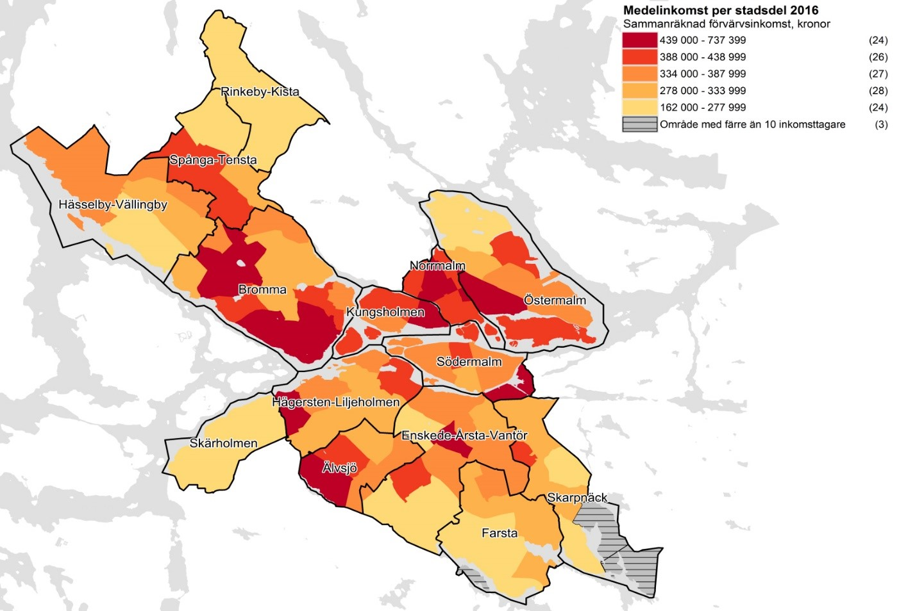
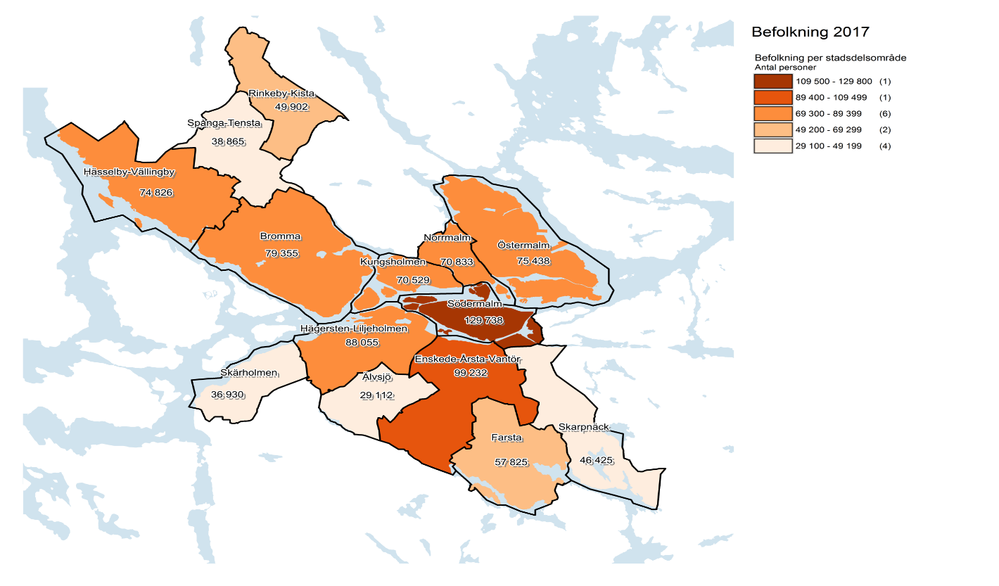

Enligt vår summering av väderdata bör en etablering ske i Stockholm eller Norrköping med en fördel för Stockholm. Eftersom vädret var av största vikt för valet av område att starta verksamheten på har vi använt oss av väderdata från SMHI för att skapa en ”väderpoäng” för att hitta de optimala områdena för er. Hur dessa beräkningar har gjorts finns tillgängligt på sidan för Etableringsort.
De stora trenderna vad gäller restaurangverksamhet de kommande åren har inte så mycket att göra med vilket typ av mat som serveras utan mer om att maten är hälsosam, att företaget har ett genomtänkt hållbarhetsarbete och att det ska vara smidigt och bekvämt för kunden att få tag i det den vill ha. Läs mer om vår research under fliken Trendrapport.
Eftersom Stockholm fick högst poäng i vår undersökning presenterar vi här data angående befolkning och inkomster i olika stadsdelar.

Källa

Källa